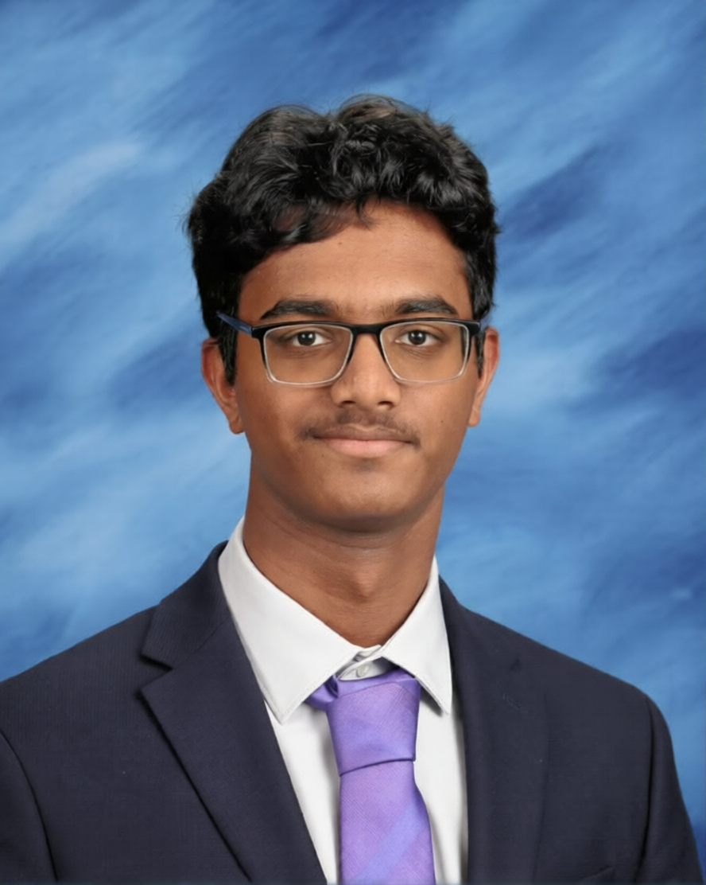

Hello
I'm Nikhil Maalige
Aspiring Computer Scientist & Bioengineering Researcher | Exploring How Technology Can Improve Human Health
I'm a student at Bergen County Academies interested in the intersection of computer science, machine learning, and bioengineering — exploring how intelligent systems can contribute to healthcare and real-world problem solving.
View Research
About Me
Aspiring Student
I'm passionate about understanding how technology can be used to solve meaningful, real-world problems — especially in healthcare and biomedical innovation.
My interest in computer science began through programming and technical coursework, but over time it expanded into a broader curiosity about how intelligent systems and engineering can support human health. This interest has led me to explore areas such as machine learning, reinforcement learning, diagnostics, and healthcare technology through research, technical projects, and collaborative learning experiences.
Currently, I'm exploring these interests through projects, academic research, and hands-on learning opportunities while continuing to deepen my technical foundation in software development and computational thinking.
My Mission
Learning, Building, and Creating Meaningful Impact
I'm driven by curiosity and a desire to understand how ideas can be transformed into solutions that make a real difference. Whether through technology, research, or collaboration, I enjoy exploring complex problems, learning continuously, and building skills that can contribute to meaningful impact.
Areas I'm Exploring
Healthcare Technology
Exploring how engineering and computational systems can support diagnostics, medical innovation, and patient-centered care.
Machine Learning & AI
Learning how intelligent systems work and exploring applications of machine learning and reinforcement learning.
Software Development
Building technical skills through programming, full-stack development, and problem-solving experiences.
Beyond the Classroom
Outside academics, I enjoy playing the alto and tenor saxophone, participating in marching band and ensemble performances, collaborating in hackathons, and teaching younger students through music programs.
These experiences continue to shape how I approach teamwork, discipline, communication, and creative problem-solving.